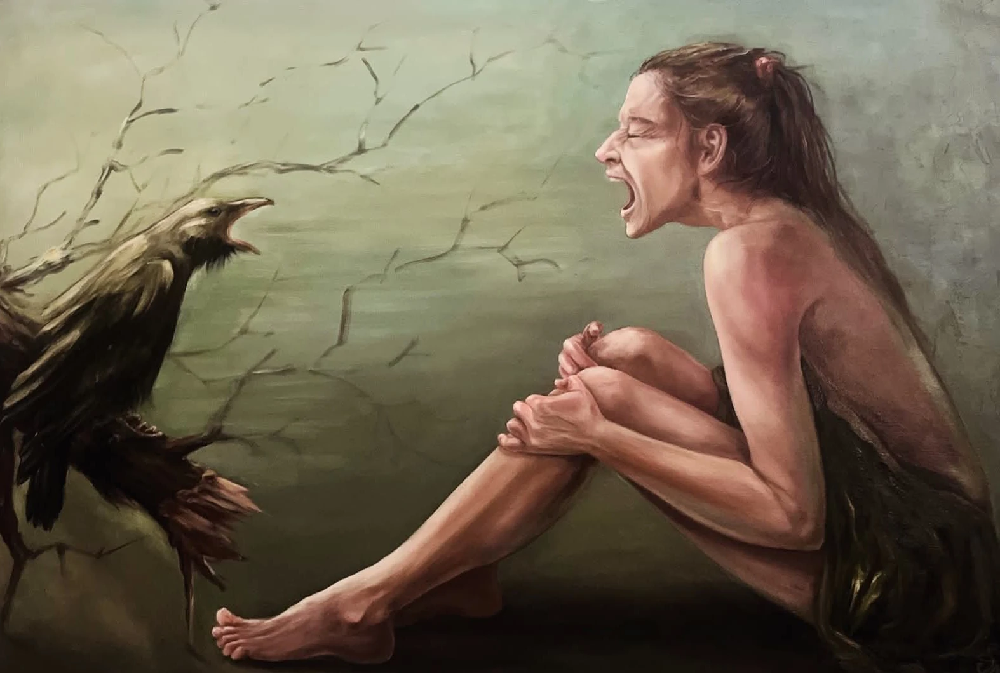
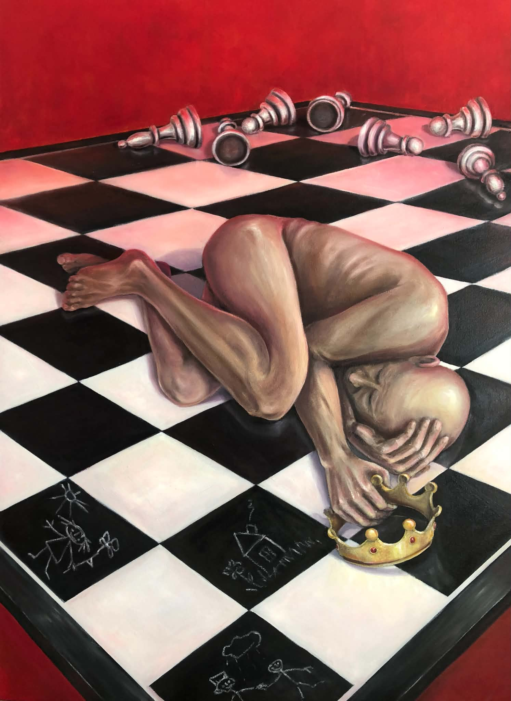
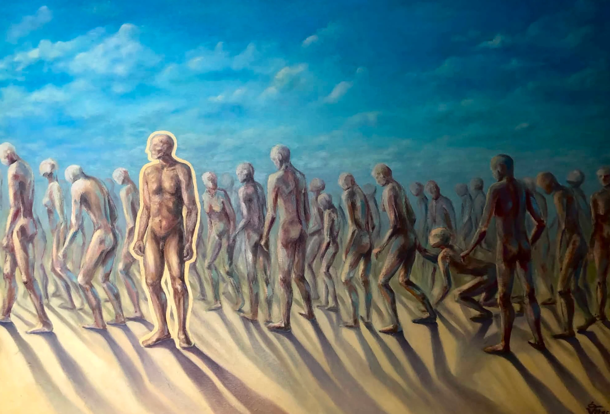

Між сміхом і тишею
2026 рік
полотно, олія
90х70
Образ клоуна розкриває суперечність між зовнішньою грою та внутрішнім станом людини.
Яскравий одяг і краватка
контрастують з пригніченною позою. Це образ самотності за маскою веселощів, коли сміх стихає і залишається зустріч
з самим собою.
Картина досліджує межу між роллю, яку людина демонструє світові та почуттями, які приховує за нею.
Тримаюсь
2026 рік
полотно, олія
80х60
Картина про внутрішню боротьбу людини, яка попри біль і вразливість, намагається зберегти себе. Обіймаючи власне тіло,
героїня ніби шукає опору в самій собі.
Це образ тихої сили, самотності і здатності триматися навіть тоді, коли
здається, що сил більше немає.


Очікування
2025 рік
полотно, олія
80х100
Сюжет цієї картини дихає меланхолією, самотністю, але водночас і певною стійкістю.
Попри втому,
дівчина продовжує вести свій лік, а отже - не втрачає надії і вірить, що це очікування має кінцеву точку
Віслюк у кріслі
2026 рік
полотно, олія
90х70
Картина - про людську впертість, про бажання займати чуже місце, яке тобі не належить і вперто не визнавати, що воно не твоє і ти тут зайвий


Відчай
2025 рік
полотно, олія
70х100
Картина про сильні емоції.
Іноді, коли ми намагаємось донести свої думки і емоції до оточуючих,
здається, що наші слова просто губляться в повітрі.
Вони не досягають мети і залишають нас в розпачі. Але попри всю
гіркоту та відчай, крик у пустоту може стати потужним інструментом для змін
Вакуум
2025 рік
полотно, олія
90х70
Цей образ передає відчуття перевантаження та неможливість зосередитись і засвоювати всю інформацію в сучасному світі, коли голова як порожня кулька.


Укриття
2023 рік
полотно, олія
80х60
У центрі картини - тендітна постать дитини, яка стоїть спиною до глядача і дивиться вперед на світло надії.
Простір навколо неї нагадує тунель, але замість стін його утворюють постаті військових. Захисники стали живим
щитом,що закриває дитину від хаосу та нищівної сили війни.
Олійні мазки підкреслюють контраст між кам'яною стійкістю воїнів
і крихкістю дитинства.
Ця робота - притча про нове розуміння "укриття", де безпеку та право на майбутнє
для цілого покоління дарують ті, хто тримає фронт.
Віслюк у яблуках
(Він мріяв бути конем в яблуках)
2025 рік
полотно, олія
60х90
Це не просто віслюк серед яблук - це образ кожного, хто хотів більшого, але залишився з тим, що зміг "пережувати".
Це образ тих, хто прагне бути кимось іншим, але стикається з обмеженнями власної природи або рамками, які нав'язує світ.


Шах і мат
2023 рік
полотно, олія
100х80
Картина символізує внутрішню боротьбу людини. Фігура на шахівниці в позі розпачу тримає корону - знак втраченої
влади. Повалені фігури, поразка, хаос. Дитячі малюнки нагадують про втрачену невинність.
Життя - гра, де перемога не завжди
приносить щастя.
Той, хто не скорився
2025 рік
полотно, олія
80х100
Назва картини підкреслює силу духу головного героя, який зберігає свою позицію серед натовпу. Це про
особисту свободу, внутрішню стійкість і небажання бути частиною масси, що сліпо кудись прямує.
Кольори
картини - блакитне небо та жовта земля - перегукуються з українським прапором, що символізує мирне небо й
родючу землю. У цьому поєднанні - образ незламності українського духу: навіть у потоці труднощів є ті, хто
здатен мислити вільно і обірати власний шлях.


Три не ...
2023 рік
полотно, олія
100х70
Картина сюреалістична, де в центрі - голова в навушниках і з замком на вустах, що знаходиться в картонній коробці.
Вона уособлює людину, ізольовану від світу, позбавлену можливості говорити або чути щось поза рамками дозволенного.
Подібні голови розкидані в полі серед квітів, що створює парадокс: життя триває, але свідомість залишається замкненою.
Це роздуми про сучасне суспільство, де індивідуальність часто знецінюється, а мислення - стандартизується.
EN